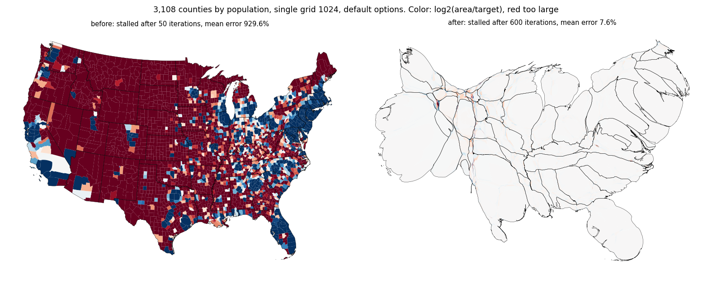

A step moves the fastest point dt cells, so progress per iteration falls with the cell size and the fixed 2 % required improvement ended runs on fine grids that were converging. Above 256 cells the required improvement is scaled by 256 over the number of cells. Counties at grid 1024 go from stalled at the start (929 % mean error) to 4.2 %; Arizona's counties converge at 512 and 1024; runs at 256 cells and below are identical.
stall_min_improvement (2 %) is the improvement of the window minimum of the error ratio that counts as progress. The windows are 10 iterations. The required improvement is now stall_min_improvement * min(1, 256 / cells), with cells the number of cells along the longer side of the grid, so it is 2 % at 256 cells and below, 1 % at 512, 0.5 % at 1024 and 0.25 % at 2048.
stall166.py runs every case (the data are in data_stall166.log).
| input | grid | default rule | scaled rule (this change) | no stall rule (3,000 iterations at most) |
|---|---|---|---|---|
| AZ counties | 256 | converged, 206 it, mean 2.2 %, max 6 % | converged, 206 it, mean 2.2 %, max 6 % | converged, 206 it, mean 2.2 %, max 6 % |
| AZ counties | 512 | stalled, 50 it, mean 393.73 %, max 1137.2 % | converged, 383 it, mean 1.27 %, max 5 % | converged, 383 it, mean 1.27 %, max 5 % |
| AZ counties | 1024 | stalled, 50 it, mean 414.13 %, max 1194.8 % | converged, 755 it, mean 1.92 %, max 9.9 % | converged, 755 it, mean 1.92 %, max 9.9 % |
| TX counties | 512 | stalled, 50 it, mean 1939.49 %, max 56196.4 % | stalled, 480 it, mean 11.64 %, max 410.6 % | completed, 3000 it, mean 6 %, max 355.6 % |
| TX counties | 1024 | stalled, 50 it, mean 2054.93 %, max 59399.6 % | stalled, 960 it, mean 1.72 %, max 47.8 % | completed, 3000 it, mean 1.72 %, max 47.8 % |
| states pop | 256 | converged, 111 it, mean 0.5 %, max 5.9 % | converged, 111 it, mean 0.5 %, max 5.9 % | converged, 111 it, mean 0.5 %, max 5.9 % |
| states pop | 512 | converged, 213 it, mean 0.59 %, max 7.8 % | converged, 213 it, mean 0.59 %, max 7.8 % | converged, 213 it, mean 0.59 %, max 7.8 % |
| states pop | 1024 | converged, 420 it, mean 0.74 %, max 9.3 % | converged, 420 it, mean 0.74 %, max 9.3 % | converged, 420 it, mean 0.74 %, max 9.3 % |
| states pop | 2048 | stalled, 80 it, mean 168.19 %, max 1540.2 % | converged, 832 it, mean 0.96 %, max 9.7 % | converged, 832 it, mean 0.96 %, max 9.7 % |
| districts pop | 256 | converged, 149 it, mean 0.47 %, max 7.2 % | converged, 149 it, mean 0.47 %, max 7.2 % | converged, 149 it, mean 0.47 %, max 7.2 % |
| districts pop | 512 | converged, 261 it, mean 0.41 %, max 6.2 % | converged, 261 it, mean 0.41 %, max 6.2 % | converged, 261 it, mean 0.41 %, max 6.2 % |
| districts pop | 1024 | converged, 510 it, mean 0.54 %, max 8.5 % | converged, 510 it, mean 0.54 %, max 8.5 % | converged, 510 it, mean 0.54 %, max 8.5 % |
| districts pop | 2048 | converged, 1006 it, mean 0.64 %, max 9.8 % | converged, 1006 it, mean 0.64 %, max 9.8 % | converged, 1006 it, mean 0.64 %, max 9.8 % |
| counties pop | 1024 | stalled, 50 it, mean 929.39 %, max 57754.3 % | stalled, 700 it, mean 4.17 %, max 622.9 % | completed, 3000 it, mean 2.27 %, max 610.4 % |
| counties pop | 2048 | stalled, 50 it, mean 968.37 %, max 60180 % | stalled, 1100 it, mean 3.09 %, max 477 % | completed, 3000 it, mean 0.94 %, max 385.5 % |

Counties by population on a single grid of 1024 with default options, before (stalled after 50 iterations at 929 % mean error) and after (stalled after 700 iterations at 4.2 %). Color is log2(area/target); red is too large.